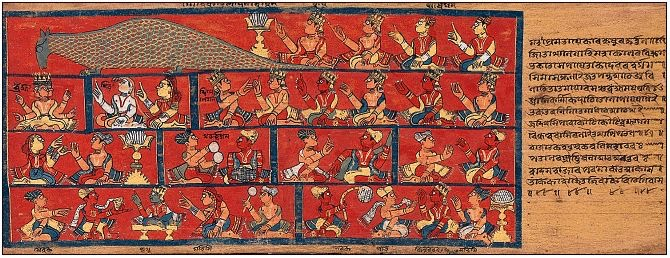

Shubhajit Dey
Short Intro (third-person)


Shubhajit Dey is an applied math researcher, currently doing his research
somewhere in this world. His research spans the confluence of differential geometry,
numerical analysis, deep learning and continuous optimization.
He completed his BS-MS dual degree in Mathematics with a minor in Data Science &
Engineering from the Indian Institute of Science Education and Research (IISER)
Bhopal in 2024, where he was supervised by Dr. Anandateertha Mangasuli and Dr. Ambuj
Pandey. He has also conducted research at Université du Québec à Montréal under the
supervision of Dr. Janosch Ortmann and Prof. Walter Rei, working on computational
algebraic geometry for discrete optimization.
Most recently, Shubhajit served as Teaching Fellow (Head) in the Computer Science
department at Ashoka University, where he contributed towards undergrad teaching
under Prof. Bhargab Bikram Bhattacharya, Prof. Partha Pratim Das and Dr. Mahavir
Prasad Jhawar.